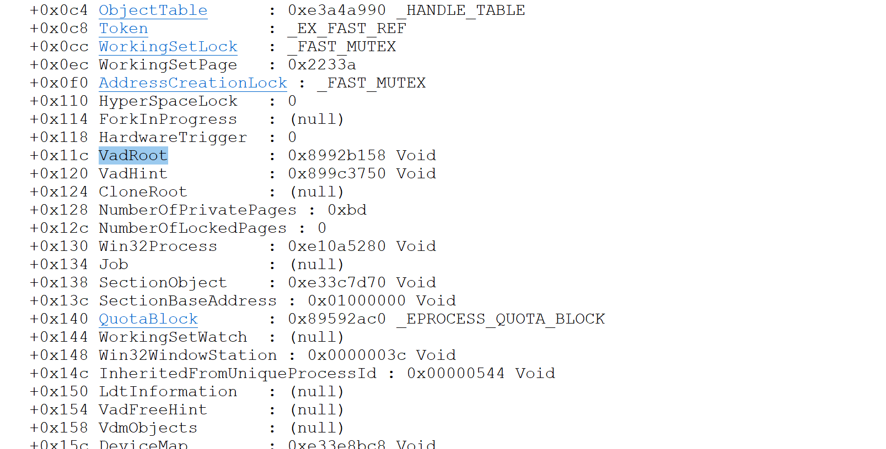
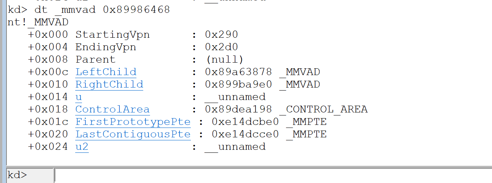
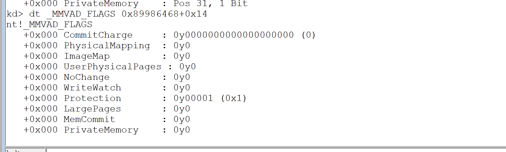
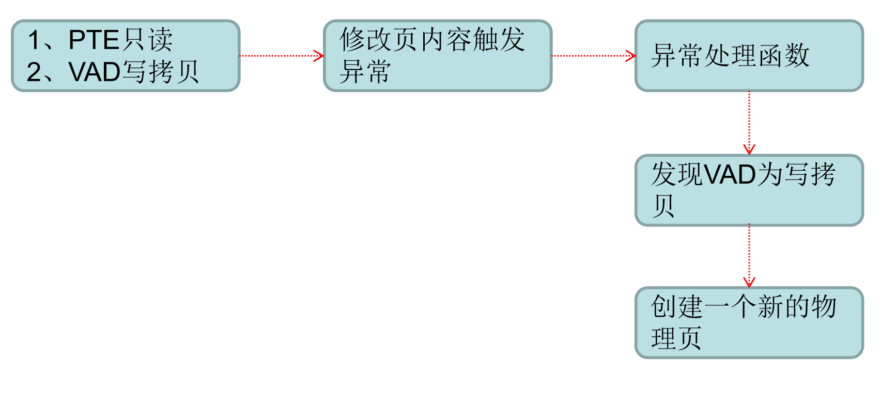
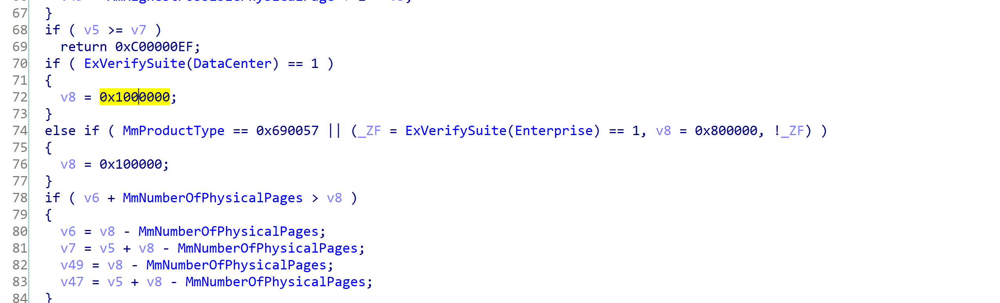
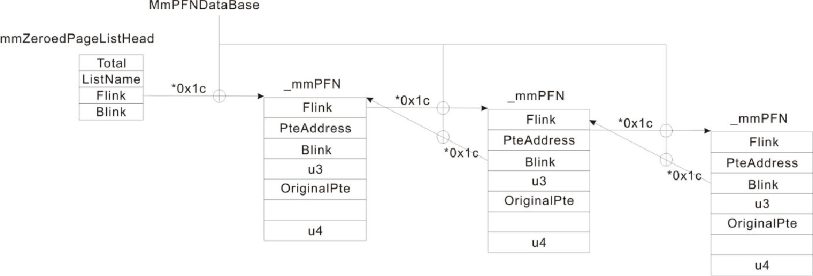

简述windows内存管理
windows进程空间划分
| 分区 |
x86 32位Windows |
| 空指针赋值区 |
0x00000000 - 0x0000FFFF |
| 用户模式区 |
0x00010000 - 0x7FFEFFFF |
| 64KB禁入区 |
0x7FFF0000 - 0x7FFFFFFF |
| 内核 |
0x80000000 - 0xFFFFFFFF |
首先有个问题，我们都知道用户态空间中存放着用户私有数据代码还有dll，那每当我们需要分配空间时，例如调用virtualalloc函数，操作系统是如何找到一块未被使用的内存呢？
所以说每个进程中都存在一个结构体记录了用户态地址分配情况(内核态基本相同)
VAD
VAD组织成一个AVL自平衡二叉树。
位于eprocess处


查看一波结构
1
2
3
4
5
6
7
8
9
10
11
| nt!_MMVAD
+0x000 StartingVpn
+0x004 EndingVpn
+0x008 Parent
+0x00c LeftChild
+0x010 RightChild
+0x014 u
+0x018 ControlArea
+0x01c FirstPrototypePte
+0x020 LastContiguousPte
+0x024 u2
|
前俩个成员表示了线性地址开始与结束地址，单位是页，所以乘上0x1000
parent是父节点，因为这是根节点所以是null
u表示了这段内存的属性

1
2
3
4
5
6
7
8
9
10
11
12
13
14
15
16
| kd> dt _MMVAD_FLAGS
nt!_MMVAD_FLAGS
+0x000 CommitCharge
+0x000 PhysicalMapping
+0x000 ImageMap
+0x000 UserPhysicalPages
+0x000 NoChange
+0x000 WriteWatch
+0x000 Protection
+0x000 LargePages
+0x000 MemCommit
+0x000 PrivateMemory
|
1
2
3
4
5
6
7
8
9
10
11
12
13
14
15
16
17
18
19
20
21
22
23
24
25
26
27
28
29
30
31
32
33
34
35
36
37
38
39
40
41
42
43
44
45
46
47
48
49
50
51
52
53
54
55
56
57
58
59
60
61
62
63
64
65
66
67
68
69
| kd> !vad 0x89986468
VAD Level Start End Commit
8953a9b8 3 10 10 1 Private READWRITE
899b56f0 2 20 20 1 Private READWRITE
899b55b0 5 30 3f 6 Private READWRITE
89521148 4 40 7f 18 Private READWRITE
89984880 3 80 82 0 Mapped READONLY Pagefile section, shared commit 0x3
895191d0 4 90 91 0 Mapped READONLY Pagefile section, shared commit 0x2
89a63878 1 a0 19f 21 Private READWRITE
8997f0a8 4 1a0 1af 6 Private READWRITE
899b5a00 3 1b0 1bf 0 Mapped READWRITE Pagefile section, shared commit 0x3
8952c0a8 4 1c0 1d5 0 Mapped READONLY \WINDOWS\system32\unicode.nls
899b1870 2 1e0 220 0 Mapped READONLY \WINDOWS\system32\locale.nls
899b57f0 4 230 270 0 Mapped READONLY \WINDOWS\system32\sortkey.nls
8997def0 3 280 285 0 Mapped READONLY \WINDOWS\system32\sorttbls.nls
89986468 0 290 2d0 0 Mapped READONLY Pagefile section, shared commit 0x41
89527cc0 5 2e0 3a7 0 Mapped EXECUTE_READ Pagefile section, shared commit 0x4
8997c3f8 6 3b0 3bf 8 Private READWRITE
8956ac58 7 3c0 3c0 1 Private READWRITE
895232a8 8 3d0 3d0 1 Private READWRITE
895211c8 10 3e0 3e1 0 Mapped READONLY Pagefile section, shared commit 0x2
8953a6e0 9 3f0 3f1 0 Mapped READONLY Pagefile section, shared commit 0x2
89c551b0 10 400 40f 3 Private READWRITE
89522b08 4 410 41f 8 Private READWRITE
89519150 3 420 42f 4 Private READWRITE
899798c8 4 430 432 0 Mapped READONLY \WINDOWS\system32\ctype.nls
8954b718 2 440 47f 3 Private READWRITE
8996f178 5 480 582 0 Mapped READONLY Pagefile section, shared commit 0x103
8996f218 4 590 88f 0 Mapped EXECUTE_READ Pagefile section, shared commit 0x22
89b09108 3 890 90f 1 Private READWRITE
89520ae8 5 910 95f 0 Mapped READONLY Pagefile section, shared commit 0x50
89520b18 4 960 960 0 Mapped READWRITE Pagefile section, shared commit 0x1
89981558 6 970 9af 0 Mapped READWRITE Pagefile section, shared commit 0x10
899b5630 5 9b0 9bd 0 Mapped READWRITE Pagefile section, shared commit 0xe
899ad850 7 9c0 abf 123 Private READWRITE
899b5a30 6 ad0 b4f 0 Mapped READWRITE Pagefile section, shared commit 0x7
89546d90 7 b50 bcf 0 Mapped READWRITE Pagefile section, shared commit 0x2
899ba9e0 1 1000 1012 3 Mapped Exe EXECUTE_WRITECOPY \WINDOWS\system32\notepad.exe
89527d30 7 58fb0 59179 9 Mapped Exe EXECUTE_WRITECOPY \WINDOWS\AppPatch\AcGenral.dll
89519c60 8 5adc0 5adf6 2 Mapped Exe EXECUTE_WRITECOPY \WINDOWS\system32\uxtheme.dll
89527c90 6 5cc30 5cc55 20 Mapped Exe EXECUTE_WRITECOPY \WINDOWS\system32\shimeng.dll
8953a6b0 7 62c20 62c28 1 Mapped Exe EXECUTE_WRITECOPY \WINDOWS\system32\lpk.dll
89522ad8 5 72f70 72f95 3 Mapped Exe EXECUTE_WRITECOPY \WINDOWS\system32\winspool.drv
899b5660 8 73640 7366d 2 Mapped Exe EXECUTE_WRITECOPY \WINDOWS\system32\MSCTFIME.IME
899b5970 7 73fa0 7400a 16 Mapped Exe EXECUTE_WRITECOPY \WINDOWS\system32\usp10.dll
89518648 8 74680 746cb 3 Mapped Exe EXECUTE_WRITECOPY \WINDOWS\system32\MSCTF.dll
895198f8 6 759d0 75a7e 3 Mapped Exe EXECUTE_WRITECOPY \WINDOWS\system32\userenv.dll
89979c40 7 76300 7631c 1 Mapped Exe EXECUTE_WRITECOPY \WINDOWS\system32\imm32.dll
89a65c70 4 76320 76366 4 Mapped Exe EXECUTE_WRITECOPY \WINDOWS\system32\comdlg32.dll
899adb98 8 76990 76acc 8 Mapped Exe EXECUTE_WRITECOPY \WINDOWS\system32\ole32.dll
899ad7e0 7 76b10 76b39 2 Mapped Exe EXECUTE_WRITECOPY \WINDOWS\system32\winmm.dll
899adbc8 8 770f0 7717a 4 Mapped Exe EXECUTE_WRITECOPY \WINDOWS\system32\oleaut32.dll
899b6b38 6 77180 77282 2 Mapped Exe EXECUTE_WRITECOPY \WINDOWS\WinSxS\x86_Microsoft.Windows.Common-Controls_6595b64144ccf1df_6.0.2600.5512_x-ww_35d4ce83\comctl32.dll
899add30 8 77bb0 77bc4 2 Mapped Exe EXECUTE_WRITECOPY \WINDOWS\system32\msacm32.dll
895180a8 9 77bd0 77bd7 1 Mapped Exe EXECUTE_WRITECOPY \WINDOWS\system32\version.dll
89b08508 7 77be0 77c37 7 Mapped Exe EXECUTE_WRITECOPY \WINDOWS\system32\msvcrt.dll
895232e8 8 77d10 77d9f 2 Mapped Exe EXECUTE_WRITECOPY \WINDOWS\system32\user32.dll
8996f148 5 77da0 77e48 5 Mapped Exe EXECUTE_WRITECOPY \WINDOWS\system32\advapi32.dll
899b5690 6 77e50 77ee1 1 Mapped Exe EXECUTE_WRITECOPY \WINDOWS\system32\rpcrt4.dll
89b084d8 8 77ef0 77f38 2 Mapped Exe EXECUTE_WRITECOPY \WINDOWS\system32\gdi32.dll
89b08478 9 77f40 77fb5 2 Mapped Exe EXECUTE_WRITECOPY \WINDOWS\system32\shlwapi.dll
899b5710 7 77fc0 77fd0 1 Mapped Exe EXECUTE_WRITECOPY \WINDOWS\system32\secur32.dll
899b5a90 3 7c800 7c91d 5 Mapped Exe EXECUTE_WRITECOPY \WINDOWS\system32\kernel32.dll
899848b0 2 7c920 7c9b2 5 Mapped Exe EXECUTE_WRITECOPY \WINDOWS\system32\ntdll.dll
899b58e0 5 7d590 7dd83 30 Mapped Exe EXECUTE_WRITECOPY \WINDOWS\system32\shell32.dll
899b57c0 4 7f6f0 7f7ef 0 Mapped EXECUTE_READ Pagefile section, shared commit 0x6
89984850 3 7ffa0 7ffd2 0 Mapped READONLY Pagefile section, shared commit 0x33
89983180 4 7ffd4 7ffd4 1 Private READWRITE
899ad870 5 7ffdf 7ffdf 1 Private READWRITE
|
用!vad指令来查看一波notepad的vad树
89986468 0 290 2d0 0 Mapped READONLY Pagefile section, shared commit 0x41
以这个为例之前看到PrivateMemory为0所以是map
Protection是1所以是READONLY
ImageMap是0所以非镜像文件
!vad这个指令其实就是方便寻找，如何实现也显而易见
windows线性地址管理
windows有俩种申请内存的方式
1.通过VirtualAlloc/VirtualAllocEx申请 Private Memory
2.通过CreateFileMapping映射 Mapped Memory
Private Memory
1
2
3
4
5
6
| LPVOID VirtualAlloc{
LPVOID lpAddress,
DWORD dwSize,
DWORD flAllocationType,
DWORD flProtect
};
|
可能有人会疑惑像malloc这种函数也是申请内存，为什么不在里面。
进程初始化的时候操作系统会用VirtualAlloc/VirtualAllocEx申请一块堆块，malloc只是从那块申请的堆块中拿出一小份
这些知识打过pwn的同学都知道
Mapped Memory
mapped memory主分俩种，共享内存和共享文件
共享内存
也就是映射在同一个物理页
1
2
3
4
5
6
7
8
9
10
11
12
13
14
15
16
17
18
| #define _CRT_SECURE_NO_DEPRECATE
#include <stdio.h>
#include <windows.h>
#include <tlhelp32.h>
#include <stdlib.h>
#define MapFileName "共享内存"
int main()
{
HANDLE g_hMapFile = CreateFileMapping(INVALID_HANDLE_VALUE, NULL, PAGE_READWRITE, 0, BUFSIZ, (LPCWCHAR)MapFileName);
LPTSTR g_lpBuff = (LPTSTR)MapViewOfFile(g_hMapFile, FILE_MAP_ALL_ACCESS, 0, 0, BUFSIZ);
*(PDWORD)g_lpBuff = 0x12345678;
printf("%p", g_lpBuff);
return 0;
}
|
当其他进程需要该内存时用OpenFileMapping即可，MapFileName就是其参数
和之前内核对象的学习很像
共享文件
1
2
3
4
5
6
7
8
9
10
11
12
13
14
| #define _CRT_SECURE_NO_DEPRECATE
#include <stdio.h>
#include <windows.h>
#include <tlhelp32.h>
#include <stdlib.h>
int main()
{
HANDLE g_hFile = CreateFile((LPCWSTR)"NOTEPAD.EXE", GENERIC_READ | GENERIC_WRITE, FILE_SHARE_READ, NULL, OPEN_ALWAYS, FILE_ATTRIBUTE_NORMAL, NULL);
HANDLE g_hMapFile = CreateFileMapping(g_hFile, NULL, PAGE_READWRITE, 0, BUFSIZ, NULL);
LPTSTR g_lpBuff = (LPTSTR)MapViewOfFile(g_hMapFile, FILE_MAP_ALL_ACCESS, 0, 0, BUFSIZ);
*(PDWORD)g_lpBuff = 0x12345678;
return 0;
}
|
共享文件和共享内存区别就在于一个获取句柄，CreateFileMapping时传入即可，这是会给改文件分配一个物理页，但是还不会建立与线性地址的映射关系，到MapViewOfFile时才会建立
镜像文件
说白了就是LoadLibrary
用LoadLibrary加载的都会有写拷贝属性，这样就不会因为修改而影响到其他文件
写拷贝
像一般dll都是多进程共享一个物理页面，如果其中一个进程hook了dll，所有进程都会被影响，所以需要写拷贝

绕过写拷贝只需要把pte的rw位置1，这样就不会触发异常
物理内存管理
因为windows操作系统的限制，xp只能支持4gb内存，即使是29912分页

但是服务器版本就没有限制可以识别到64gb
每个物理页都对应一个结构体
1
2
3
4
5
6
7
| nt!_MMPFN
+0x000 u1 : __unnamed
+0x004 PteAddress : Ptr32 _MMPTE
+0x008 u2 : __unnamed
+0x00c u3 : __unnamed
+0x010 OriginalPte : _MMPTE
+0x018 u4 : __unnamed
|
3、物理页状态
0：MmZeroedPageListHead 零化链表（是系统在空闲的时候进行零化的，不是程序自己清零的那种）
1：MmFreePageListHead 空闲链表（物理页是周转使用的，刚被释放的物理页是没有清0，系统空闲的时候有专门的线程从这个队列摘取物理页，加以清0后再挂入MmZeroedPageListHead）
2：MmStandbyPageListHead 备用链表（当系统内存不够的时候，操作系统会把物理内存中的数据交换到硬盘上，此时页面不是直接挂到空闲链表上去，而是挂到备用链表上，虽然我释放了，但里边的内容还是有意义的）
3：MmModifiedPageListHead
4：MmModifiedNoWritePageListHead
5：MmBadPageListHead 坏链
